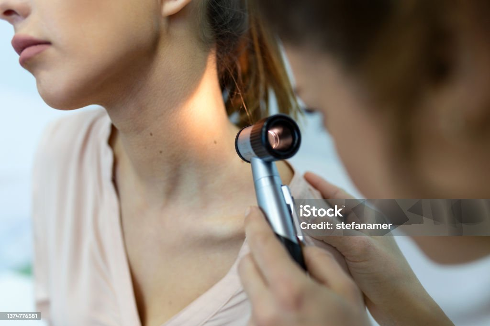

.png)
Skin cancer is one of the most common cancers in the world, affecting millions of people every year. It develops when skin cells grow abnormally, usually because of too much exposure to ultraviolet (UV) radiation from the sun or tanning beds. Although skin cancer can be dangerous, learning about the risks and taking preventive steps can greatly reduce the chances of developing it.

There are different types of skin cancer, including melanoma, basal cell carcinoma, and squamous cell carcinoma. Melanoma is considered the most serious because it can spread quickly to other parts of the body. Fortunately, when skin cancer is detected early, treatment is often very successful. This is why awareness and regular skin checks are extremely important.

One major risk factor for skin cancer is repeated sunburn, especially during childhood and teenage years. People with lighter skin, many moles, or a family history of skin cancer may also have a higher risk. However, skin cancer can affect anyone, regardless of age or skin tone, which makes protection and education important for everybody.

Protecting your skin from harmful UV rays is simple but very effective. Wearing sunscreen with a high SPF, using sunglasses and hats, and staying in the shade during strong sunlight hours can help protect the skin. Avoiding tanning beds is also important because artificial UV radiation can damage the skin just like the sun.
Regular skin checks can save lives. People should pay attention to new spots, unusual moles, or changes in the skin such as bleeding, itching, or changes in color and size. Visiting a doctor or dermatologist when noticing suspicious changes can help detect skin cancer early and increase the chances of successful treatment.
